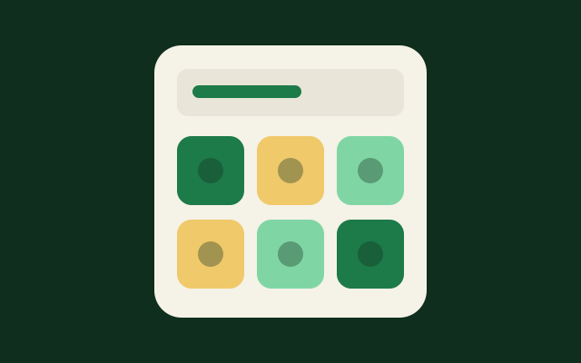
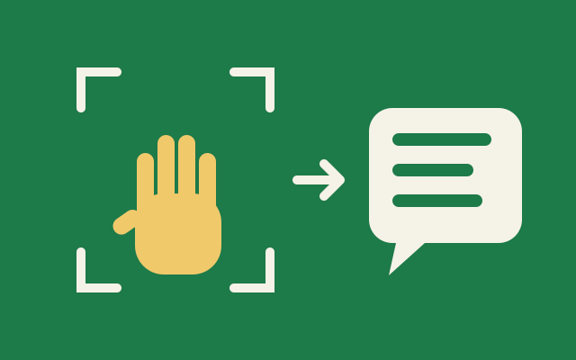
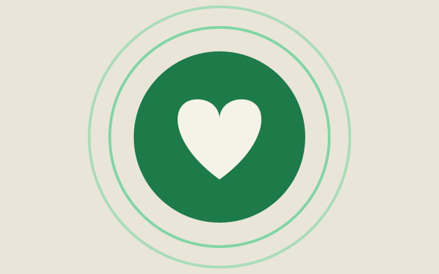
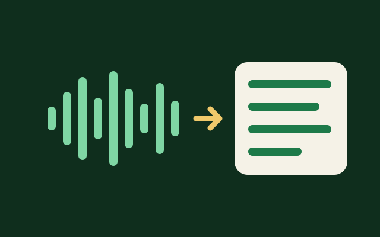
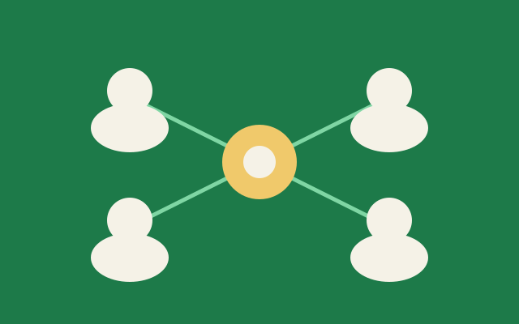
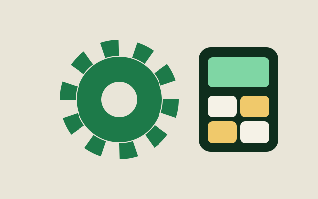

AAC devices & apps
Augmentative and Alternative Communication tools, such as the Pocket Go-Talk 5-Level Communication Device, help non-verbal users express themselves.
Helps withSpeechCognitive
AAC stands for Augmentative and Alternative Communication. These are the tools we use and build so that everyone can be heard and understood.
Browse the toolkitFrom recordable-button devices like the Pocket Go-Talk to AI apps that read sign language, we match the tool to the person, not the other way round.
Six kinds of tools, each tagged with the needs it supports.

Augmentative and Alternative Communication tools, such as the Pocket Go-Talk 5-Level Communication Device, help non-verbal users express themselves.
Helps with
Camera-based AI detects sign language and turns it into text or speech, so deaf and hearing people can talk directly.
Helps with
Easy-to-use platforms with visual and audio therapy tools, designed for persons with disabilities.
Helps with
AI apps that convert speech to text and text to speech, so communication works in both directions.
Helps with
Moderated online groups where people share experiences and get mental wellness guidance from trained facilitators.
Helps with
Locally adapted AAC tools that are affordable and relevant, so communities with limited resources can use them.
Helps withTell us about the person and the situation. We will help you choose.
Contact us